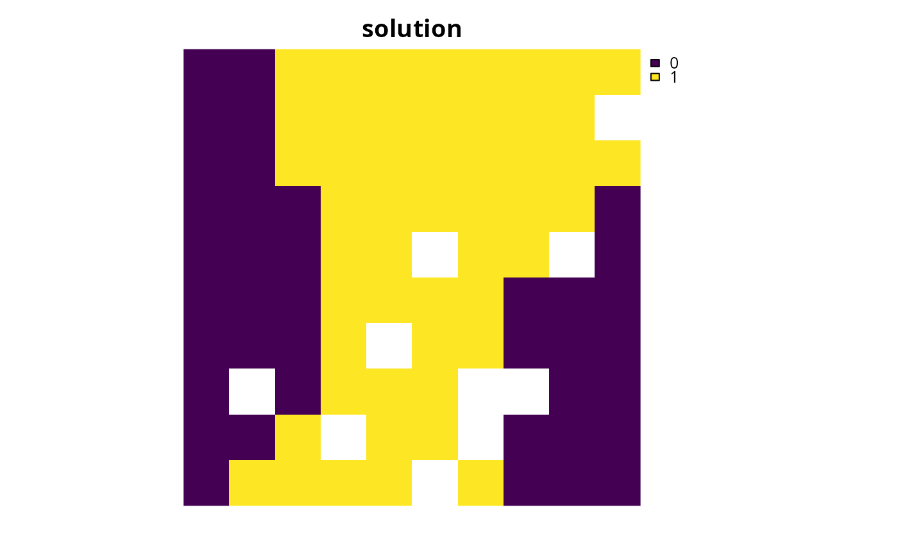

Add targets to a conservation planning problem by log-linearly interpolating the targets between thresholds based on the total amount of each feature in the study area (Rodrigues et al. 2004). Additionally, caps can be applied to targets to prevent features with massive distributions from being over-represented in solutions (Butchart et al. 2015).
Usage
add_loglinear_targets(
x,
lower_bound_amount,
lower_bound_target,
upper_bound_amount,
upper_bound_target,
cap_amount = NULL,
cap_target = NULL,
abundances = feature_abundances(x, na.rm = FALSE)$absolute_abundance
)Arguments
- x
problem()object.- lower_bound_amount
numericthreshold.- lower_bound_target
numericrelative target that should be applied to features with a total amount that is less than or equal tolower_bound_amount.- upper_bound_amount
numericthreshold.- upper_bound_target
numericrelative target that should be applied to features with a total amount that is greater than or equal toupper_bound_amount.- cap_amount
numerictotal amount at which targets should be capped. Defaults toNULLso that targets are not capped.- cap_target
numericamount-based target to apply to features which have a total amount greater than argument tocap_amount. Defaults toNULLso that targets are not capped.- abundances
numerictotal amount of each feature to use when calculating the targets. Defaults to the feature abundances in the study area (calculated using thefeature_abundances()) function.
Value
An updated problem() object with the targets added to it.
Details
Targets are used to specify the minimum amount or proportion of a
feature's distribution that needs to be protected. All conservation
planning problems require adding targets with the exception of the maximum
cover problem (see add_max_cover_objective()), which maximizes
all features in the solution and therefore does not require targets.
Seven parameters are used to calculate the targets:
lower_bound_amount specifies the first range size threshold,
lower_bound_target specifies the relative target required for
species with a range size equal to or less than the first threshold,
upper_bound_amount specifies the second range size threshold,
upper_bound_target specifies the relative target required for
species with a range size equal to or greater than the second threshold,
cap_amount specifies the third range size threshold,
cap_target specifies the absolute target that is uniformly applied
to species with a range size larger than that third threshold, and finally
abundances specifies the range size for each feature
that should be used when calculating the targets.
The target calculations do not account for the
size of each planning unit. Therefore, the feature data should account for
the size of each planning unit if this is important (e.g., cell values in
the argument to features in the function problem() could
correspond to amount of land occupied by the feature in \(km^2\) units).
Additionally, the function can only be applied to
problem() objects that are associated with a
single zone.
References
Rodrigues ASL, Akcakaya HR, Andelman SJ, Bakarr MI, Boitani L, Brooks TM, Chanson JS, Fishpool LDC, da Fonseca GAB, Gaston KJ, and others (2004) Global gap analysis: priority regions for expanding the global protected-area network. BioScience, 54: 1092–1100.
Butchart SHM, Clarke M, Smith RJ, Sykes RE, Scharlemann JPW, Harfoot M, Buchanan, GM, Angulo A, Balmford A, Bertzky B, and others (2015) Shortfalls and solutions for meeting national and global conservation area targets. Conservation Letters, 8: 329–337.
See also
See targets for an overview of all functions for adding targets.
Other targets:
add_absolute_targets(),
add_manual_targets(),
add_relative_targets()
Examples
# \dontrun{
# load data
sim_pu_raster <- get_sim_pu_raster()
sim_features <- get_sim_features()
# create problem using loglinear targets
p <-
problem(sim_pu_raster, sim_features) %>%
add_min_set_objective() %>%
add_loglinear_targets(10, 0.9, 100, 0.2) %>%
add_binary_decisions() %>%
add_default_solver(verbose = FALSE)
# solve problem
s <- solve(p)
# plot solution
plot(s, main = "solution", axes = FALSE)

# }